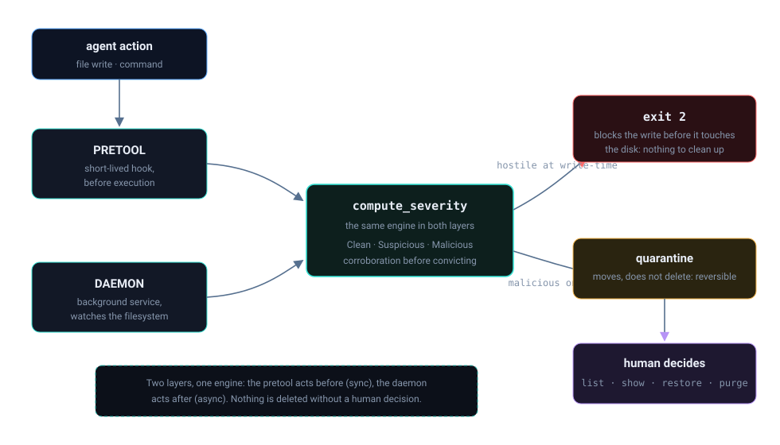
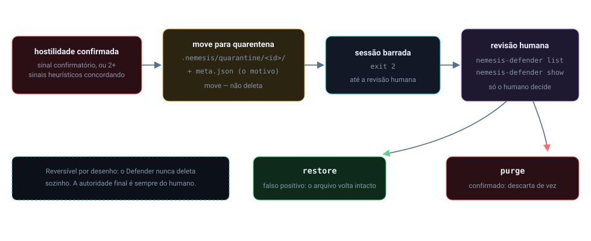

Início/Conceitos/6 · Pretool, defender e daemon
conceito 6 · interceptação e contençãoPretool, defender e daemon: interceptação, decisão e contenção
Três peças que se chamam e formam o fluxo: o pretool intercepta a ação antes de acontecer, o nemesis-defender é o cérebro que escaneia e dá o veredito, e o daemon é o processo de fundo que observa o filesystem e move o malware confirmado para a quarentena.
O pretool é um hook síncrono e fail-closed: a IDE o chama antes de cada ação do agente, ele traduz o pedido e passa o conteúdo ao motor. O nemesis-defender é esse motor: a função compute_severity, pura, decide Clean / Suspicious / Malicious. O daemon é um processo que roda em background, desacoplado do shell, observando o filesystem; quando confirma hostilidade, ele move o arquivo para a quarentena (não deleta) e trava a sessão para revisão humana.

Do zero: o que é um daemon
Um daemon é um processo que roda continuamente em segundo plano, sem terminal nem interação direta, normalmente iniciado uma vez e vivo enquanto o serviço existir. Ele é desacoplado do PID do shell que o lançou: fecha-se o terminal e ele continua. É o oposto de um hook, que nasce, decide e morre a cada invocação. O pretool é hook (vida curta, write-time, síncrono); o defender-daemon é serviço (vida longa, observando eventos de arquivo). Essa diferença de natureza é o que permite as duas cobrirem janelas de tempo diferentes.
Por que importa
O pretool pega a ação antes de o byte tocar o disco, é a hora certa de barrar uma escrita ruim, porque barrar é reversível. Mas e se um arquivo hostil chegar ao disco por um caminho que o hook não viu? Aí entra o daemon: ele vigia o filesystem e age depois, sobre o arquivo já materializado. Como agir depois pode significar destruir, o daemon nunca deleta: ele move para a quarentena e chama o humano. Interceptar e conter são dois tempos do mesmo problema.

restore ou purge.Como se correlaciona
Eles se invocam em cadeia. O pretool, ao rodar, garante que o daemon esteja no ar (fire-and-forget) e, no Linux, garante também o daemon eBPF do grupo 2. Pretool e daemon compartilham o mesmo motor scan_content (mesma fonte de regras, mesmo veredito para bytes iguais, ver visão geral). E a decisão de severidade aqui é a mesma que o grupo 9 aprofunda na corroboração e na quarentena.
Como o Nemesis aplica
A interceptação começa traduzindo o nome da ferramenta da IDE em uma intenção do Nemesis, isso é o que normaliza Devin, Claude, Cursor, Codex e outros num vocabulário só:
📄 .nemesis/hooks/nemesis-pretool-check-unix.rs:312-347 · tradução de ferramenta em intençãolet agent_action = match tool_name {
"Edit" | "Write" | "MultiEdit" => "pre_write_code",
"Bash" => "pre_run_command",
"Read" | "Grep" => "pre_read_code",
// Claude / Codex / Cursor / Antigravity ...
s if s.starts_with("mcp__") => "pre_mcp_tool_use",
_ => "pre_write_code",
};O cérebro é a função pura de severidade: instrução probabilística não contém; enforcement determinístico contém. Um sinal confirmatório basta para Malicious; senão, conta-se quantos tipos distintos de sinal corroborante apareceram:
📄 .nemesis/nemesis-defender/src/lib.rs:413-437 · compute_severity (função pura)fn compute_severity(violations: &[DefenderViolation]) -> Severity {
if violations.iter().any(|v| CONFIRMATORY_VISITORS.contains(&v.visitor.as_str())) {
return Severity::Malicious;
}
// conta TIPOS distintos de visitor corroborante
match distinct.len() {
0 => Severity::Clean,
1 => Severity::Suspicious, // heurístico isolado, loga e mantém
_ => Severity::Malicious, // 2+ métodos independentes concordam
}
}O pretool sobe o daemon eBPF como fire-and-forget quando o kernel suporta BPF-LSM, sem esperar:
📄 .nemesis/hooks/nemesis-pretool-check-unix.rs:1107-1141 · backstop eBPF (Linux)let lsm_ok = std::fs::read_to_string("/sys/kernel/security/lsm")
.map(|s| s.contains("bpf")).unwrap_or(false);
if lsm_ok { /* spawn nemesis-ebpf-daemon --ensure-daemon (não espera) */ }E a contenção é movimento, não destruição: o daemon move o arquivo confirmado para uma pasta de quarentena com metadados, e trava a sessão enquanto houver pendência:
📄 .nemesis/nemesis-defender/src/quarantine.rs:1-11 · mover para quarentena, não deletar//! em vez de DELETAR arquivos maliciosos, o nemesis-defender os MOVE para
//! .nemesis/quarantine/ e os retém para revisão humana.
//! - o arquivo original (preservado, inerte) + meta.json (por quê)
//! enquanto houver itens pendentes, o pretool bloqueia a sessão (exit 2).Decisões e limites
O daemon é security-only: regra de qualidade nunca chega nele. Qualidade se resolve bloqueando a escrita, que é reversível; deletar arquivo é irreversível, e o daemon não faz isso por regra de estilo. A única divergência aceita entre pretool e daemon é essa camada de qualidade, exclusiva do pretool no write-time.
O daemon sobe como fire-and-forget para não travar a IDE, mas no install isso é proibido de propósito: o daemon recém-subido quarentenaria o próprio instalador. O install faz só o essencial, e a validação (doctor + pentest) é um passo manual posterior, documentado no info-install.txt. Por fim, compute_severity conta tipos distintos de sinal, não hits: vários matches da mesma causa num arquivo não escalam indevidamente para Malicious.
Auto-checagem
Por que o pretool barra escrita mas o daemon move para quarentena?
Porque o pretool age antes do disco (barrar é reversível) e o daemon age depois, sobre o arquivo já materializado (deletar seria irreversível). Mover preserva a evidência e devolve a decisão ao humano.
O que torna a decisão determinística e não probabilística?
compute_severity é uma função pura: mesmos sinais, mesmo veredito. Não há "talvez" do modelo; há regra. Instrução no prompt pode ser ignorada, a função não.
Por que um daemon e não outro hook?
Porque o daemon vive em background, desacoplado do shell, e observa eventos do filesystem ao longo do tempo, uma janela que o hook (vida curta, write-time) não cobre.
Para ir além
Citações verificadas contra o repositório. Voltar ao índice.